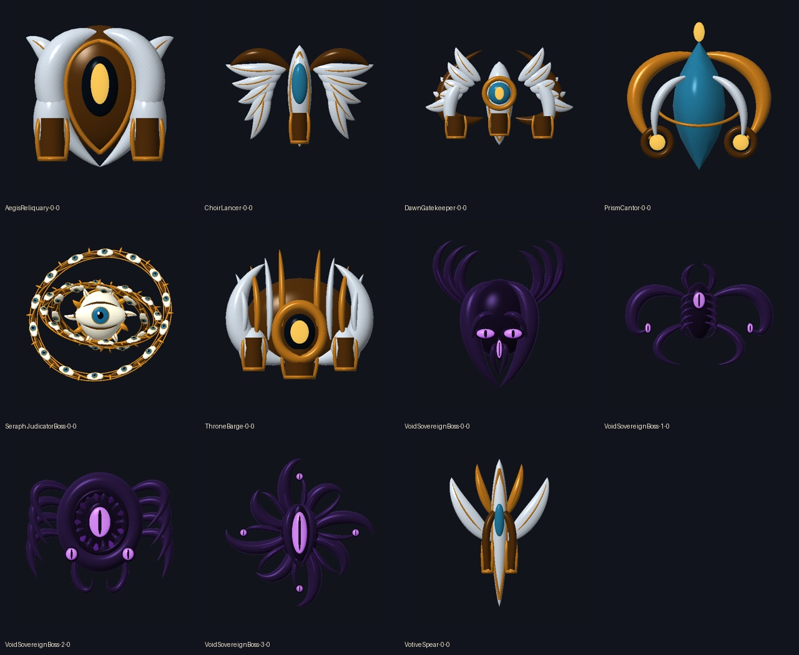
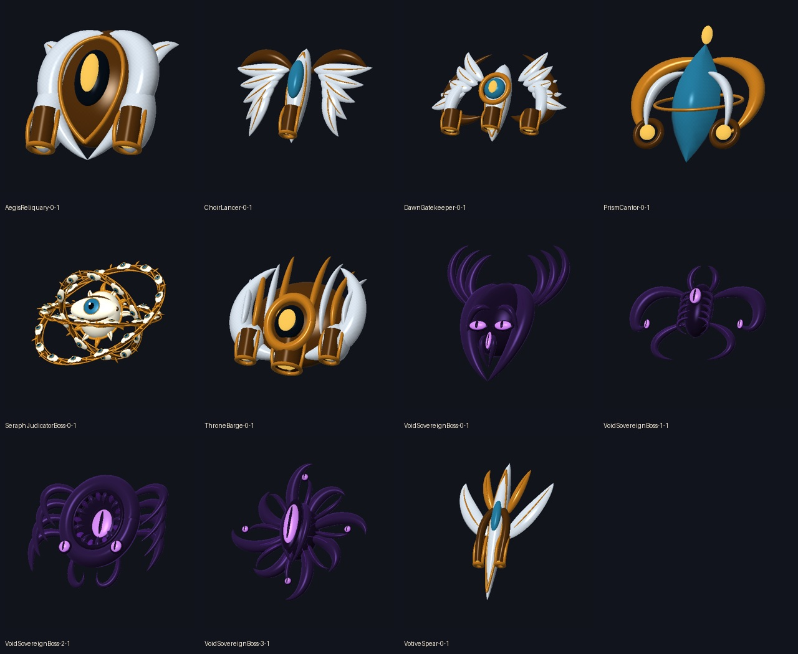
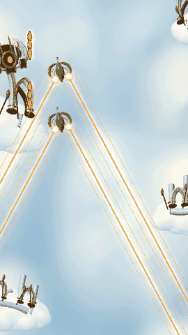
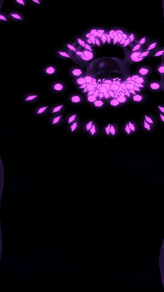
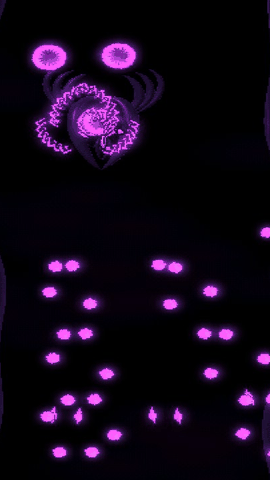
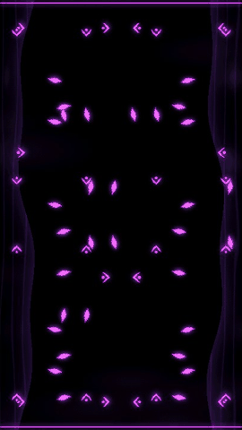
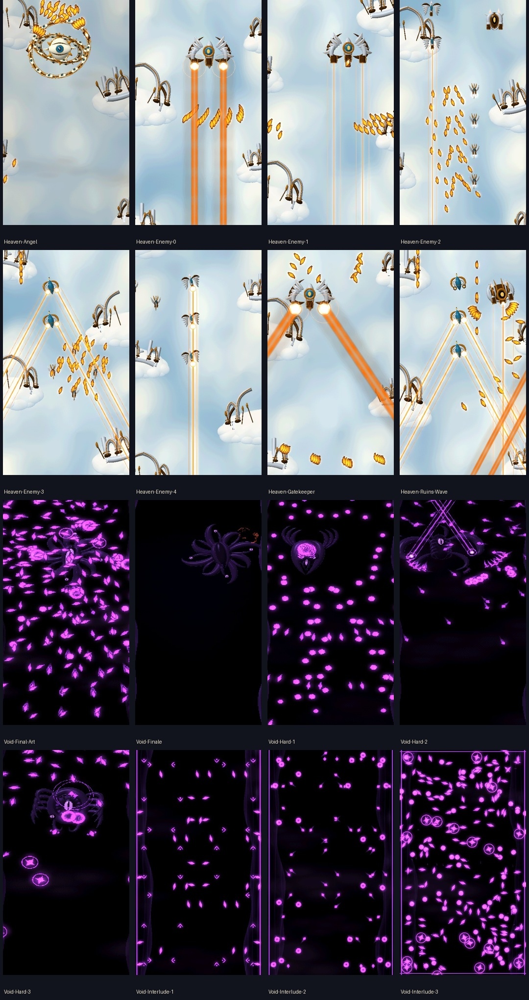

Heaven & Void
Native Unity renders. Pearl and gold sanctuaries, living eye-covered wheels, and four obsidian forms.

Angled views


Heaven — cloud terraces and gilded ruins.

Void — four forms, four opening scores.

Each form's second attack.

The three 15-second disappearances.
Gameplay frames

Runtime checks · Build result